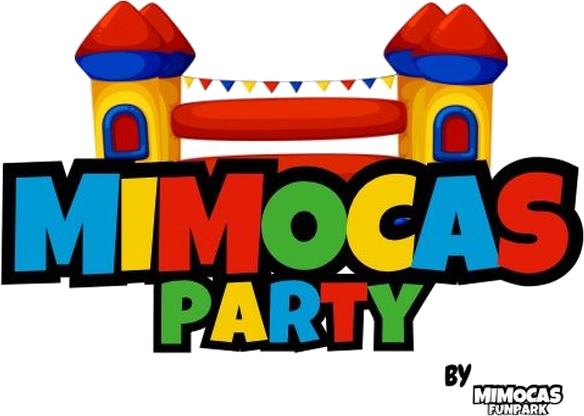

A festa vai ter contigo.
Insufláveis, decoração de eventos, pinturas faciais, mascotes e personagens. Estarreja e arredores.
RNAAT 1117/2025Turismo de Portugal
- Pedir orçamentoDiz-nos a data e o local da festa
-
Constrói o teu evento
Toca nas fotos para escolher. A mensagem fica pronta sozinha.
Pedir orçamentoFotografias ilustrativas (Unsplash)
- Instagram@mimocasparty
-
 Mimocas FunparkO parque de diversão · 4 aos 12 anos
Mimocas FunparkO parque de diversão · 4 aos 12 anos
-
Segurança não é só para a bicicleta. No Mimocas Party só trabalhamos com insufláveis profissionais, que podem ser abrangidos por seguros e garantem segurança às crianças.
- Ligar965 863 990 · contacto da Party a confirmar
- Emailmimocasfunpark@gmail.com